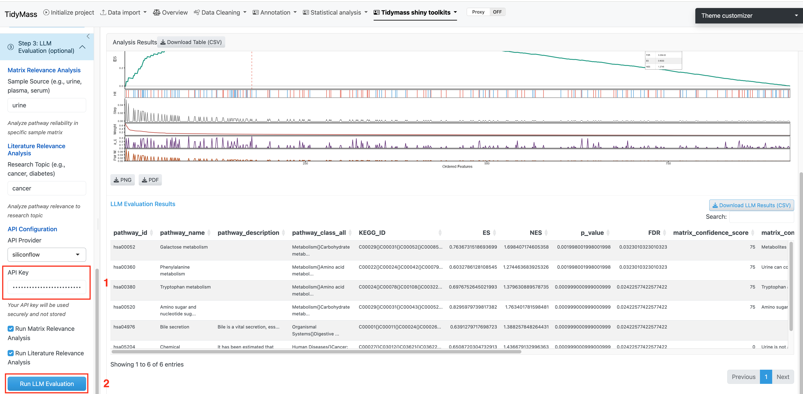

3 LLM Evaluation
Step 3 is an optional module that uses Large Language Models (LLMs) to provide biological validation of the enriched pathways identified in Step 2.

Figure 3.1: LLM evaluation interface
3.1 Two evaluation modes
3.1.1 Matrix Relevance Analysis
Evaluates how reliably metabolites detected in your biological matrix are expected to reflect pathway activity.
-
Input: Biological matrix type (e.g.,
"urine","plasma","serum","blood","feces") - Output: Per-pathway confidence score indicating matrix-pathway reliability
3.1.2 Literature Relevance Analysis
Searches PubMed and scores each enriched pathway based on published evidence for your specific research context.
-
Input: Research topic (e.g.,
"type 2 diabetes","colorectal cancer","pregnancy") - Output: Per-pathway literature support score with summarized evidence
3.2 API configuration
featureMSEA supports two LLM providers:
| Provider | Model | Notes |
|---|---|---|
| SiliconFlow (default) | Qwen series | Cost-effective; recommended for most users |
| OpenAI | GPT-4o / GPT-4 | Higher cost; may provide more nuanced outputs |
Enter your API key in the API Key field before running. Keys are never stored or transmitted beyond the LLM provider.
Caution: LLM outputs are probabilistic. Always verify AI-generated biological interpretations against primary literature. Use this module to guide hypothesis generation, not to replace domain expertise.
3.3 Running LLM evaluation
- Enter the Sample Source and/or Research Topic.
- Check the boxes for the analyses you want to run (both are enabled by default).
- Select your API Provider and enter your API Key.
- Click Run LLM Evaluation.
Results are returned as a scored table per pathway. Download the complete evaluation report via the Download LLM Evaluation button.